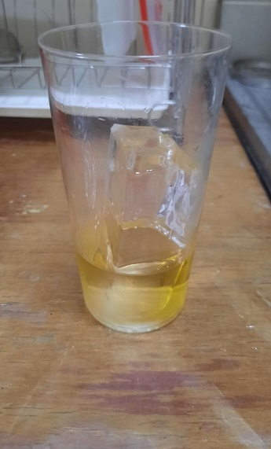
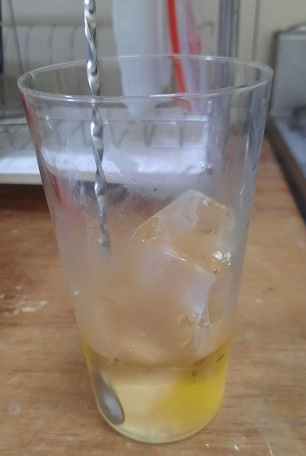
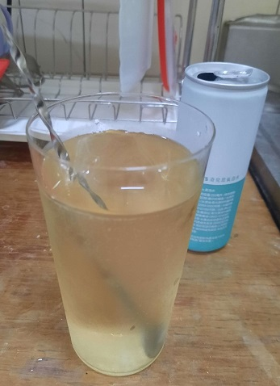
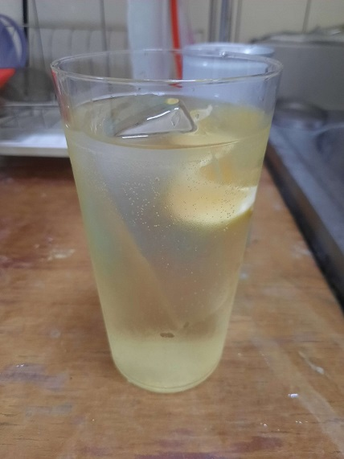
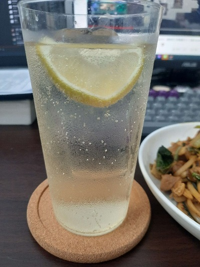

最近放暑假，最舒服的就是中午起床弄個午餐，配杯highball搭著netflix或VT。
嗨波其實就是簡單的威士忌加氣泡水，而清爽的口感在夏日午後絕對是最好的享受。
製作方法
首先在杯中加入大冰塊，接著根據你的錢包厚度還有你的心情加入45~60ml的威士忌。

接著用吧叉匙攪拌10到15圈，冷卻杯內的威士忌。

之後再倒入氣泡水至8分滿，注意在倒入氣泡水時可以傾斜杯口倒入，而不要直接快速猛烈地把氣泡水倒在冰塊上，避免氣泡散失。

最後根據口味，擠上一片檸檬再丟進杯內，給予清爽的香氣跟層次。

把你的嗨波還有炒麵放到電腦前，配著自己喜歡的音樂、劇或VT，嗨波剛入口時帶有舒服的氣泡感，清涼的氣泡將威士忌的麥香與水果花香跟著帶了上來，保留威士忌的香味時也減去了過多的酒精感，直接丟入杯中的檸檬可以讓嗅覺上增添清香，入口時也可以多出微微的香氣跟層次，配上透明的老冰更是視覺上的絕配。

上面可以發現嗨波真的是非常簡單的一杯酒，除了不用事先準備糖漿和檸檬汁外，也不需要shake和stir等技術，不過在調製時仍有一些小技巧跟事先準備的方法，而這些細節可以大幅改善你的品飲體驗跟準備工序，但這就留到下次再補充好了。